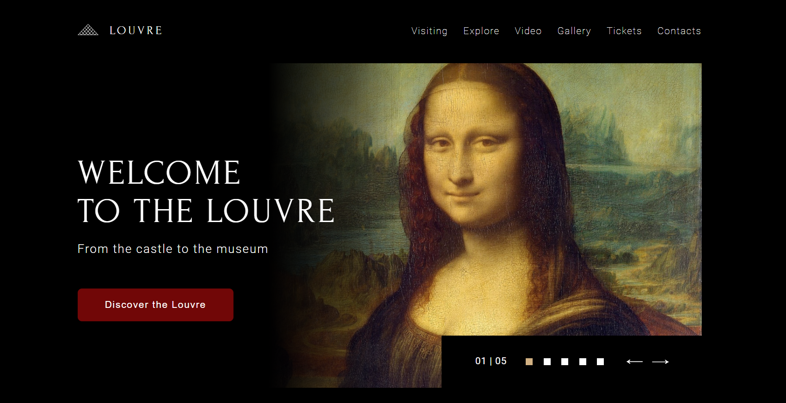
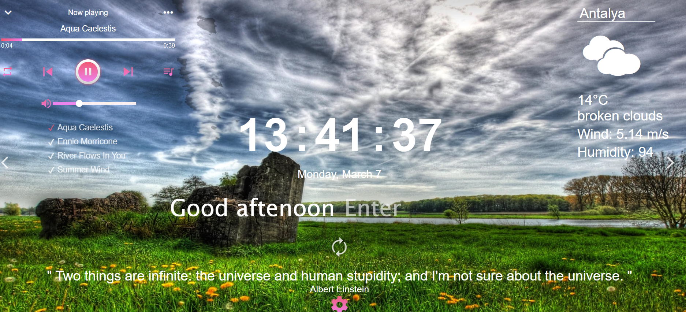
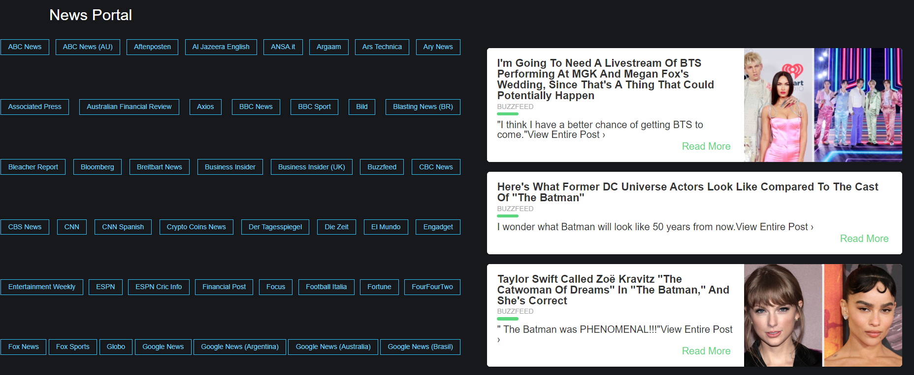
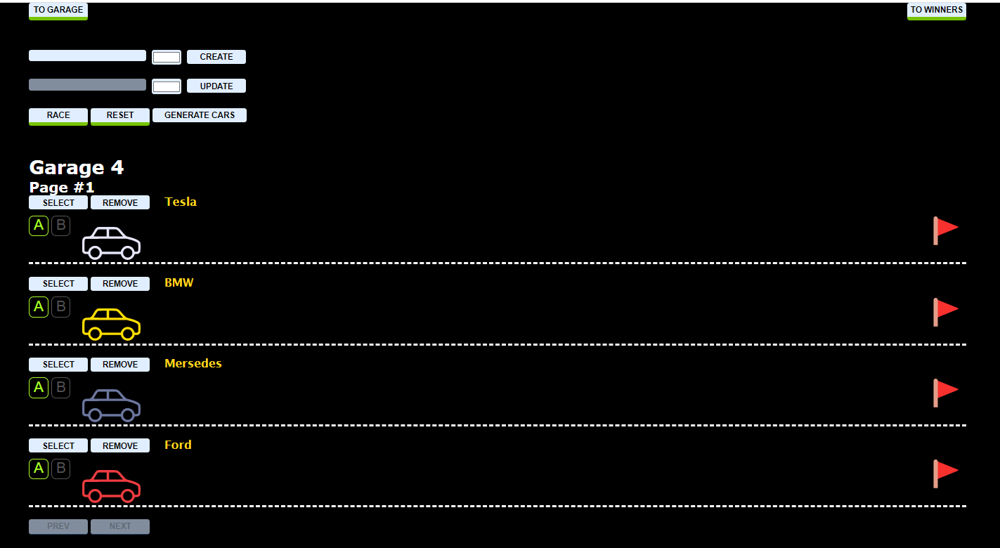
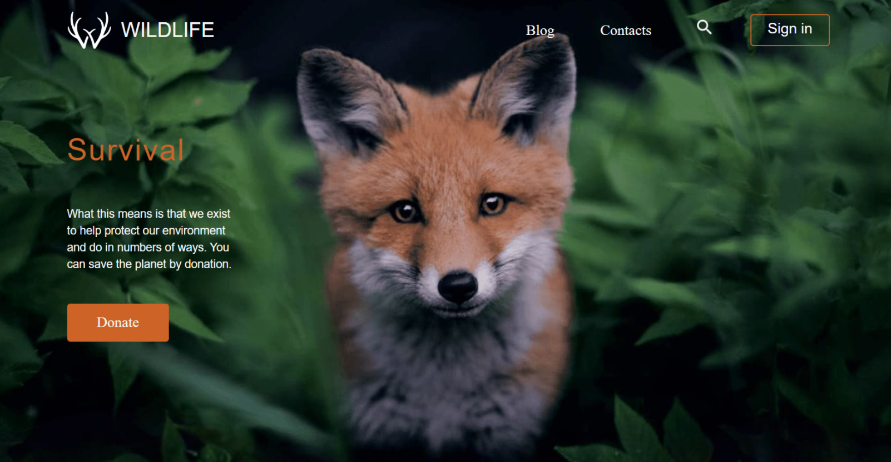
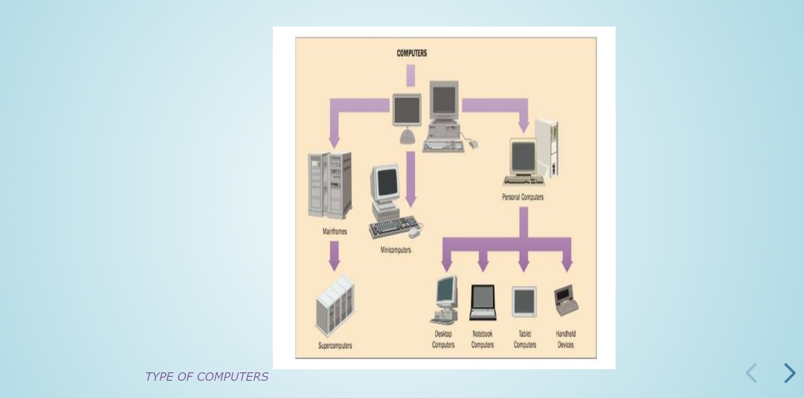
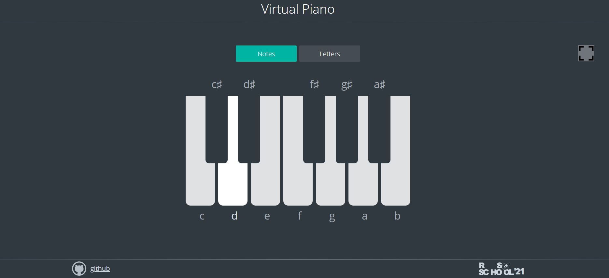
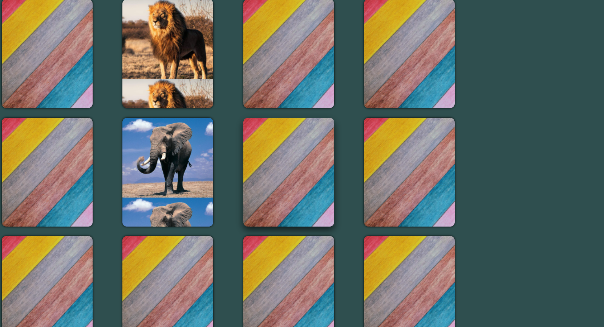

CV
Education
Kama State Academy of Engineering and Economics (1999-2004)
Courses
- JavaScript/Front-end, Rolling Scopes School (2021 - to this day)
- Udemy, The Complete JavaScript + React Course, Ivan Petrechenko (2021 - to this day)
- Udemy, TypeScript from scratch - from basics to advanced, YouRa Allahverdov (2021 - to this day)
- SoftLine Education, Introduction to web development in language Javascript (2020)
- Common health safety unit, occupational health and safety training (2018)
- Public education center, english language (2017)
- Lingva Progress Kazan, english language (2013)
- «Alttelecom» LTD, sales training (2006)
- Home Credit and Russian standard banks, credit advisor (2006)
- Consultant Plus, system training (2004)
- Kama State Academy of Engineering and Economics, database design and creation using Access DBMS (2002)
Experience
I do not have experience in frontend development, but everything ahead. I learn HTML, CSS, JS, Git, Typescript. I do tasks Momentum, Museum, Christmas-task, Async-race, Presention, Wildlife, Virtual piano and moreCode example
document.querySelector(".fullscreen").addEventListener('click', makeFullScreen);
function makeFullScreen() {
if (document.fullscreenElement === null) {
document.documentElement.requestFullscreen();
} else {
if (document.fullscreenEnabled){
document.exitFullscreen();
}
}
}Projects (tasks from RSSchool)
- Christmas-task

it was necessary to create an application that will allow sorting toys by name and number of copies, finding a toy by name, grouping toys by type, adding toys to favorites and removing them from it, as well as with an interactive page where we can decorate the Christmas tree with the selected toys. Usage technologies and key skills: Typescript, Webpack, Modules in Javascript, Data Sorting, Data Filtering, Search Implementation, 'Drag and Drog' Implementation
- Museum
It was necessary to make a website according to the Figma layout. To adapt the previously designed Louvre website for tablets and mobile devices, at resolutions of 1024px, 768px and 420px, the layout must match the layout. At other resolutions up to 320px, to make sure there is no horizontal scroll bar. To add functionality implemented through JavaScript. Usage technologies and key skills: HTML, CSS, Figma, connecting and using js libraries, creating an infinite slider / swiper or adding it using the library creating a custom HTML5 video player creating an image comparison slider scroll animation (images in the Gallery section) adding a product sales calculator to the site (ticket sales calculator in the Tickets section and in the ticket sales form) form validation adding an interactive map to the site, connected using the mapbox js-library, its customization: adding markers, changing the style easy to maintain readable quality code using modern js features
- Momentum
It was necessary to make an analogue of the Chrome Web Store application of the same name. The application shows the time and username. The background image and greeting changes depending on the time of day. The application has a clock, an image slider, weather widgets, an audio player, a quote of the day block, and settings. Local storage is used to store the username and location. Usage technologies and key skills: HTML, CSS, JS, element search methods; data output to the page; work with date and time; work with audio; saving data in local storage; using recursive setTimeout; division of js-code into modules; work with asynchronous requests.
- Migration to typescript
The News API is a simple HTTP REST API for searching and retrieving news from around the web. It was necessary to copy the application to yourself and create your own copy of the application Add TypeScript to Project Set up ESLint to work with TypeScript Set up Webpack to work with Typescript To migrate an application from JavaScript to TypeScript, be sure to use: Enum interface type Generics Union private, public Partial, pick, readonly The any type was forbidden. Usage technologies and key skills: JavaScript Classes, Modules in JavaScript, Webpack, TypeScript
- Async-race
It was necessary to create SPA to manage the collection of the cars, operate its engines, and show races statistics. Usage technologies and key skills: Сommunication with a server (fetch, REST API), Async coding / Promises, DOM Api
- Wildlife
It was necessary to make a page. Usage technologies: HTML, CSS, Figma
- Presentaion
It was necessary to prepare a presentation on a given topic, suggested or approved by mentor. Usage Technologies: HTML Presentation Framework Reveal, OBS
- Virtual piano
This task is to implement the virtual piano. Usage technologies: Vanilla JavaScript, DOM
- Match match game
This task is to implement the match-match game. The game is often used to train memory. Usage technologies: Webpack, Typescript
Language
- Turkish B2
- English A2
- Deutsch A1
Personal skills
- Analytical mind
- Work with large amounts of information
- To focus on results
- To communicate quickly with strangers
- Responsible
- Easily trained